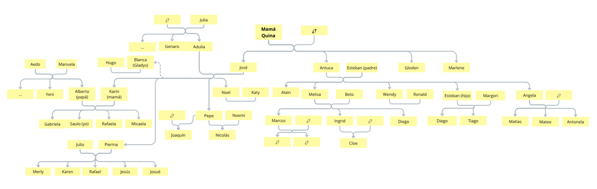

Mi familia es muy amplia, mi pariente más lejano que haya conocido y hasta donde tengo conocimiento es mi bisabuela. A mis parientes mayores como abuelos y abuelas las llamo papá o mamá, tío o tía dependiendo del parentesco, aún así estoy muy seguro de conocer muy poco acerca de la historia de mi familia, pero en fin, son los siguientes:
Padres y hermanas
Mi mamá se llama Margori Karin Granados Mendoza y mi papá se llama Alberto Timoteo Cáceres Mendigure, mis hermanas son Gabriela Patricia, quien llamamos Gaby; Juanita Micaela, quien llamamos Mica; Rafaela Alejandra, quien llamamos Rafa. Yo soy el tercero. Por suerte sé bastante de todos, especialmente de mis hermanas, ya que he estado viviendo toda mi vida con ellas.
Gaby tiene actualmente 26 años, aunque ella no quiera aceptar su mayoría de edad; nació en 1999 el 16 de enero. Mica tiene 21 años, ella no se queja; nació en 2003 el 5 de marzo. Rafa tiene 15 años; nació en 2009 el 16 de octubre. Gaby y Mica estudiaron su secundaria en la I.E. Nuestra Señora de la Candelaria, Rafa va por el 4° año en ese mismo colegio. Luego de terminar la secundaria, Gaby estudió Ingeniería Química en la UNSA, Mica ya va cursando su último año en la carrera de Relaciones Industriales en la misma universidad.
Mi mamá viene del puerto La Planchada. Pasó gran parte de su vida allá junto con sus hermanos y mis abuelos. Llegó a Camaná cuando inició su secundaria, y culminó sus estudios superiores en Educación en el Instituto La Inmaculada. Trabajó como secretaria unos años hasta que conoció a mi papá —no sé cómo se conocieron, nunca me hablan de eso y tampoco les pregunto—. Luego se casaron y formaron esta familia. Lamentablemente, mi mamá perdió la vista hace unos 6 años más o menos a causa de un glaucoma, que hasta ahora no entiendo por qué surgió, tampoco se lo pregunto por miedo a que se entriztesca. Ella ya se acostumbró a vivir así, sus demás sentidos se han afinado, especialmente el oído y el olfato, siendo difícil confundirla cuando se escucha o huele algo.
Actualmente, Mica y Gaby viven en Arequipa. Gaby trabaja como profesora de Química, Religión y otros cursos similares en un colegio privado; Mica ya culminó su carrera y está buscando un trabajo; y Rafa vive con mi mamá en Camaná, ella la apoya y ayuda en lo que puede.
Tíos y primos
Los tíos o tías que más conozco son de parte de mi mamá, es decir, sus hermanos. De parte de mi papá, a pesar de que él tiene como 10 hermanos, solo conozco a una tía, la Tía Yeni, su hermana mayor, creo. La familia de mi papá es prácticamente desconocida para mí.
Los hermanos de mi mamá son el tío Noel; el tío Pepe, que se llama José pero lo llamamos Pepe; la tía Pierina; y la tía Blanca, que en realidad se llama Gladys pero la llamamos Blanca. En realidad la tía Blanca no es su hermana, sino su prima, pero como ha vivido bastante tiempo con ellos —casi toda la vida— la consideran una hermana.
La tía Pierina está casada con el tío Julio, tiene cinco hijos: Merly, Karen, Rafael y los mellizos Jesús y Josué. El caso del tío Pepe es un poco complejo, ya que tuvo dos parejas: con la primera tuvo a Nicolás, el primo con el que vivo actualmente; y con la segunda tuvo a Joaquín, a quien he visto solo una vez en toda mi vida. Mi tio Noel se casó con la tía Katy, pero no tienen hijos. La tía Blanca tiene de pareja al profesor Hugo, tampoco tienen hijos.
Los tíos de parte de mi papá, como ya dije, no son conocidos para mí. Solo conozco a la tía Yeny, la he visto una o dos veces cuando era niño; no sé mucho de ella además de que cuida de la mamá Manuela (mamá de mi papá) y tiene esquizofrenia, aunque no muy grave según me han dicho. Mis hermanas mayores han conocido a más parientes de mi papá; yo aún no he tenido la oportunidad, aunque no sé si eso sea una buena oportunidad, pues nunca me han dicho algo bueno de ellos: todos son esto y lo otro, nadie es limpio o totalmente bueno. La familia de mi papá no es conocida para mí principalmente porque no me dejan conocerla, será por algo.
Desde la mamá Quina (mi bisabuela), conozco a 2 de mis tíos, es decir 3 de sus hijos: la tía Antuca y el tío Gloden, aún no conozco a la tía Marlene. Según tengo entendido todos ellos están casados y con hijos, la tía Antuca tiene 5 hijos: la tía Angela, el tío Alain, el tío Esteban, la tía Melisa y la tía Wendy. La tía Angela tiene 3 hijos: Matías, Mateo y Antonela, que nació el año pasado. El tío Esteban, casado con la tía Maryori —de quien no sé mucho—, tiene 2 hijos: Tiago y Sebas. La tía Melisa, casada con el tío Beto tiene 3 hijos: Marcos —que ya tienen 2 hijas, pero no está casado, o eso creo—, Ingrid y Diego. Por último, la tía Wendy no tiene hijos pero está casada con el tío Ronald.
Los tíos de parte de mi abuela, la mamá Lula, son muy pocos o no los he llegado a conocer. En primer lugar están su hermano, el papá Genaro, que está casado con la tía Lidia; ambos viven en La Planchada, aunque creo que por un tiempo y luego se van, no sé a dónde; ellos tuvieron al tío Lucho. Aunque a él no lo conozco tan a profundidad, sí lo he visto varias veces y me agrada, no sé de que trabaja o si estaba casado, no lo he visto desde hace unos años.
Abuelos
Conozco a mis dos abuelos maternos, que gracias a Dios siguen con nosotros. De los paternos sé muy poco, solo conozco a la mamá Manuela (mamá de mi papá), el papá Aedo falleció cuando mi papá era joven.
Mi abuelo materno, el papá José, es hijo de la mamá Quina —a quién afortunadamente llegué a conocer en vida—, mi bisabuela. Mi bisabuela era una señora muy viejita con el cabello blanco y el rostro arrugado, siempre estaba sentada y caminaba muy poco, pero falleció hace unos 9 años debido a su vejez, creo que tenía 89 o 92 años.
La historia de la mamá Quina no es muy hablada por mis parientes. El único que ha hablado al respecto ha sido el tío Alain, que considero que puede ser verídica por haberla narrado mientras estaba borracho, pero aún nada es seguro. Resulta que la mamá Quina estuvo casada con alguien, luego la abandonó; para poder mantener a sus hijos puso un restaurante donde frecuentaban muchas personas, así fue juntando dinero y pudo darle una buena vida a mis parientes abuelos. En su historia hubo anécdotas y otros detalles poco relevantes que no es necesario contar, pero su historia ha sido puesta en duda por mis hermanas y mi mamá, ya que esa es la versión que a él le han contado.
Mi abuela materna, la mamá Lula, que en realidad se llama Adulia, es hija de la mamá Julia, mi bisabuela materna. No llegué a conocer a la mamá Julia, puesto que falleció antes de que yo naciera, siendo Gaby la única que llegó a conocerla, cuando era bebe; luego de eso sabemos muy poco de ella. Según lo que nos contaba la mamá Lula, vivián en un campo, cuidando a los animales en un ambiente rural, lo de aquella época cuando la urbanización estaba en progreso. La historia de la mamá Lula es un poco triste según lo que nos ha dicho mi mamá: ella no terminó la secundaria y tuvo que trabajar como sirvienta para la esposa de su hermano, luego conoció al papá José y tuvieron su primer hijo a los 20 años. Estos temas son muy delicados cuando están en conversación y siempre acaban muy rápido, quizá para evitar la incomodidad o tristeza.
Mi abuela paterna es la mamá Manuela, solo la he visto una o dos veces cuando era niño, pero ni siquiera estoy seguro, ya que ocurrió hace mucho en la casa donde viviá ella y las hermanas de mi papá. El único contacto reciente que he tenido con ella fue hace dos años mediante una llamada donde la felicitamos por su cumpleaños; fue de las pocas veces que he oído su voz, era muy esforzada y débil, ella ya tiene 86 años, creo. No sé nada de su vida, ni de su rutina, de cómo o dónde vive, solo me informo un poco sobre ella cuando en visitas de mi papá mi mamá le pregunta sobre su mamá; él solo dice que está bien, nunca entra en detalles.
Mi abuelo paterno es el papá Aedo, o al menos yo lo llamo así. Falleció cuando mi papá era joven y la única foto que tenemos de él no se muestra a nadie ni se le menciona. Es un desconocido para nuestra familia y el único que habla de él es mi papá en un intento de conservar su memoria, cuando en realidad a nadie le interesa escuchar acerca de él. Suena duro pero es la verdad, así lo veo yo. Lo que nos cuenta mi papá es muy poco pero lo más resaltante fue que estuvo presente en la entrega del título a mi papá cuando terminó su carrera, luego de presentar su tesis; lo demás hasta su muerte es incierto y dudo que algún día sepamos.
Parientes lejanos
Yo pondría aquí a aquellos parientes que he visto solo una vez en mi vida o que me han llegado a platicar de ellos, ya que nuestro árbol genealógico se agranda por cada hijo que tienen.
La tía Merleni es hermana del papá José, pero nunca he llegado a conocerla. El tío Hugo es primo del papá José, de él si sé más, ya que él nos visita de vez en cuando y nos regala uno o dos sacos de los productos que saca de su chacra.
Los hermanos de la mamá Quina, de la mamá Julia, de la mamá Manuela, del papá Aedo o del esposo de la mamá Quina si es que tuvieron o aún viven entran aquí, puesto que no he llegado a conocerlos, ni siquiera sus nombres.
Recuerdo a una pariente que nos visitó una vez, era una sobrina de mi mamá, pues la llamaba tía, pero nadie ha vuelto a hablar ni saber algo de ella, ni mi mamá o mis tios. Incluso llego a pensar si sí era una pariente en o si fue Ingrid quien nos visitó; lo dudo. Lo único que recuerdo de ella era que su nombre era Milagros.
La Nueva Generación
Este apartado es sobre aquellos nuevos que están llegando: los hijos de mis parientes más cercanos, mis primos/as o hermanas/os.
Hasta ahora, octubre de 2025, 3 de mis primos han tenido hijos. Ya he mencionado a Marcos, su historia es ya algo pasado. Los nuevos integrantes de esta familia son dos; una está por venir. Mi prima Ingrid dió a luz una niña, la llamó Cloe —un nombre algo inusual—, y Merly, la hija de la tía Pierina, está en gestación. El aspecto malo de ambos casos es el contexto, pues ambas... digámoslo así, no lo planearon y sus parejas no son los mejores candidatos —mi mamá y hermanas hablan mucho de ellos, y con justa razón.
Al hablar de la familia se debe tener cuidado, ya que no se suele recurrir a ese tipo de recuerdos. Sí hay momentos en que se habla sobre las vivencias de cada uno y los demás parientes, pero no se entran en detalles o particularidades. En mi propio ambiente familiar, hablar acerca de la familia es practicamente prohibido, especialmente si es acerca de fotos. Si descubres una foto muy vieja de la mamá Lula o algún tío cuando eran jóvenes te dicen que la guardes, no hablan de ello, es como si quisieran olvidar un pasado muy oscuro, por eso es difícil obtener información sobre parientes lejanos o no muy conocidos.
ÁRBOL GENEALÓGICO
